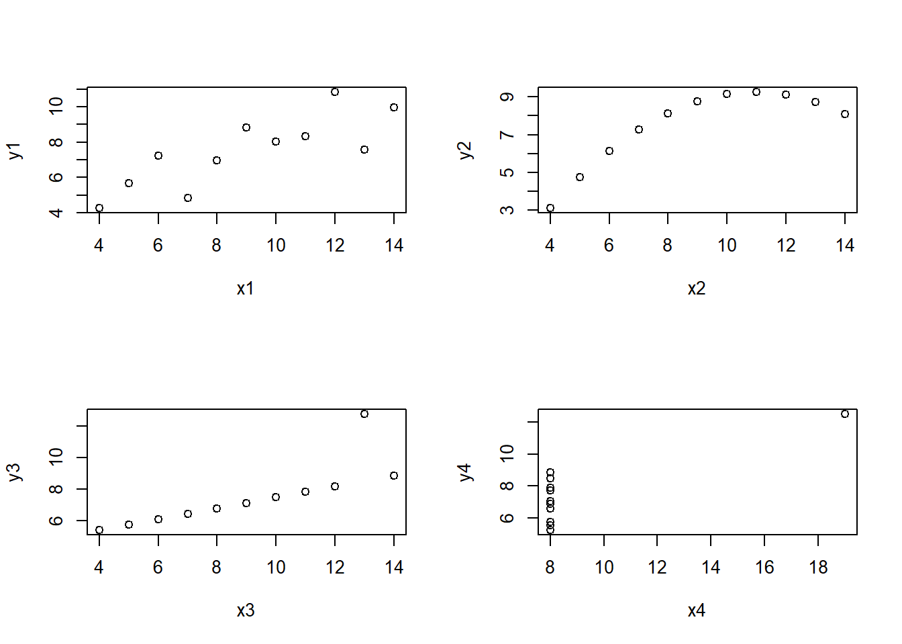

A manera de ilustración del uso de datasets integrados en R, y para destacar la importancia de analizar un conjunto de datos desde diferentes perspectivas, a continuación se analiza el dataset Anscombre, el cual fué creado por el estadístico Francis Ascombre y publicado en 1973 en The American Statistician.
En primer lugar cargamos el conjunto de datos Anscombe,
y podemos mostrar el contenido del dataset
## x1 x2 x3 x4 y1 y2 y3 y4
## 1 10 10 10 8 8.04 9.14 7.46 6.58
## 2 8 8 8 8 6.95 8.14 6.77 5.76
## 3 13 13 13 8 7.58 8.74 12.74 7.71
## 4 9 9 9 8 8.81 8.77 7.11 8.84
## 5 11 11 11 8 8.33 9.26 7.81 8.47
## 6 14 14 14 8 9.96 8.10 8.84 7.04
## 7 6 6 6 8 7.24 6.13 6.08 5.25
## 8 4 4 4 19 4.26 3.10 5.39 12.50
## 9 12 12 12 8 10.84 9.13 8.15 5.56
## 10 7 7 7 8 4.82 7.26 6.42 7.91
## 11 5 5 5 8 5.68 4.74 5.73 6.89Como podemos observar, este dataset consta de cuatro subconjuntos de datos, con 11 pares de observaciones cada uno del tipo \((x_i,y_i), i = 1, ..., 4\).
Para poder utilizar en el análisis siguiente los nombres de las variables tal y como aparecen en la tabla, utilizamos la instrucción attach(),
Como podemos ver con los siguientes cálculos, estos cuatro subconjuntos tienen propiedades estadísticas muy similares, pues si ajustamos un modelo de regresión a cada subconjunto, obtenemos lo siguiente:
##
## Call:
## lm(formula = y1 ~ x1)
##
## Coefficients:
## (Intercept) x1
## 3.0001 0.5001##
## Call:
## lm(formula = y2 ~ x2)
##
## Coefficients:
## (Intercept) x2
## 3.001 0.500##
## Call:
## lm(formula = y3 ~ x3)
##
## Coefficients:
## (Intercept) x3
## 3.0025 0.4997##
## Call:
## lm(formula = y4 ~ x4)
##
## Coefficients:
## (Intercept) x4
## 3.0017 0.4999sin embargo, al momento de representar gráficamente el comportamiento de los cuatro conjuntos de datos mediante diagramas de dispersión, podemos comprobar que difieren significativamente

Este conjunto de datos, precargado en R, es un ejemplo claro de la importancia de la visualización de datos en el análisis estadístico.